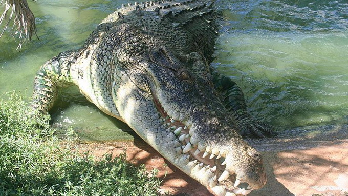
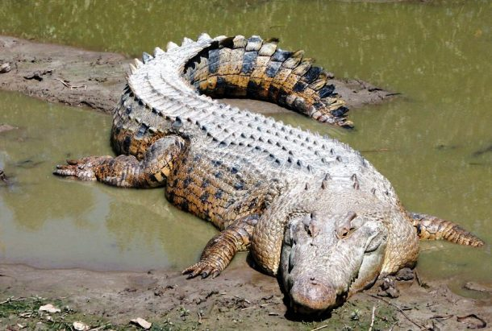

Có nguồn gốc từ những khu vực nước mặn và nước ngọt của Đông Ấn Độ, Đông Nam Á và Bắc Úc, Cá sấu nước mặn là loài bò sát lớn nhất thế giới. Kích thước trung bình của một con cá sấu đực lên tới 5.2 m (17 feet) và trọng lượng sấp sỉ 450 kg (992.08 pouch). Tuy nhiên, có một vài báo cáo chưa chính thức về một con cá sấu ở Ấn Độ có chiều dài lên tới 7 m (23 feet) với trọng lượng ước tính khoảng 2.000 kg (4.409,25 pouch). Tuy nhiên con cá sấu to lớn nhất từng được xác nhận lại có tên là Lolong, nó được ước tính rơi vào khoảng 50 tuổi, có chiều dài 6,17 m (20,24 feet), và cân nặng 1.075 kg (2.370 pouch). (Tìm hiểu thêm: 8 thông tin sẽ khiến bạn ngạc nhiên về cá sấu nước mặn)
Cá sấu nước mặn tên khoa học Crocodylus prorosus là sinh vật bò sát lớn nhất thế giới. Con đực trung bình có chiều dài khoảng 5 mét, nhưng các báo cáo thực tế lại cho thấy chiều dài của chúng khoảng 8 mét.
Cá sấu nước mặn sống trong một khu vực rộng lớn kéo dài từ phía Bắc Úc đến Đông Ấn Độ và đặc biệt là Đông Nam Á.